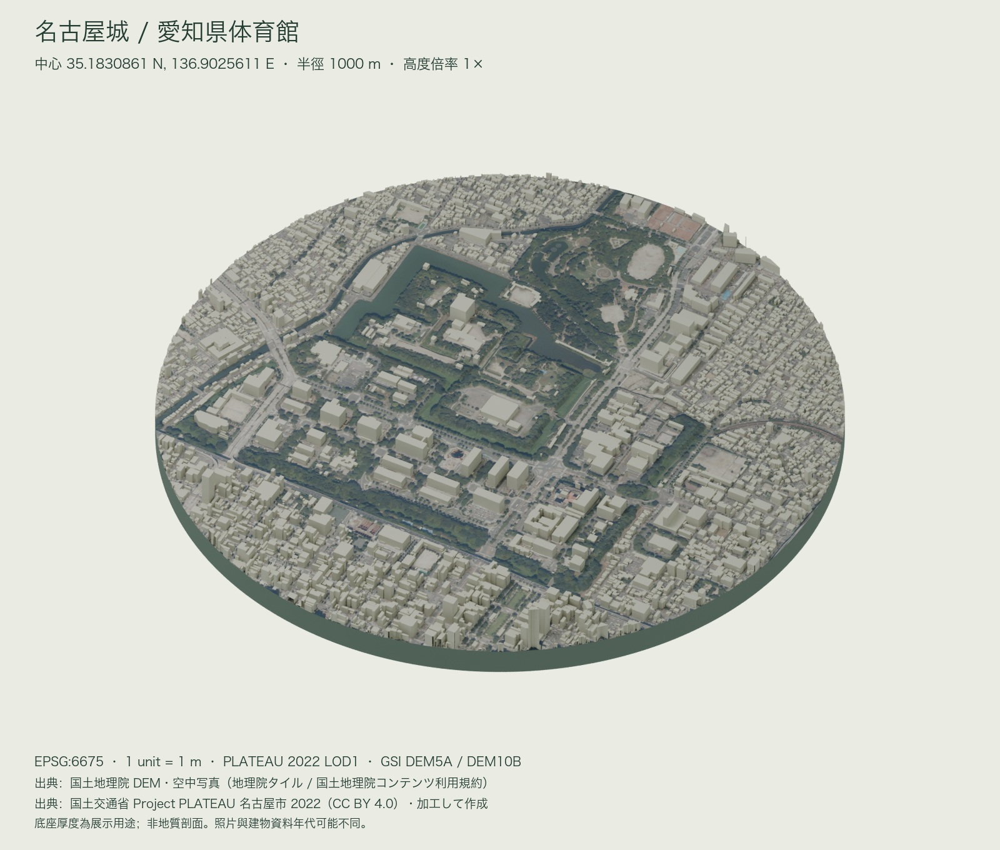
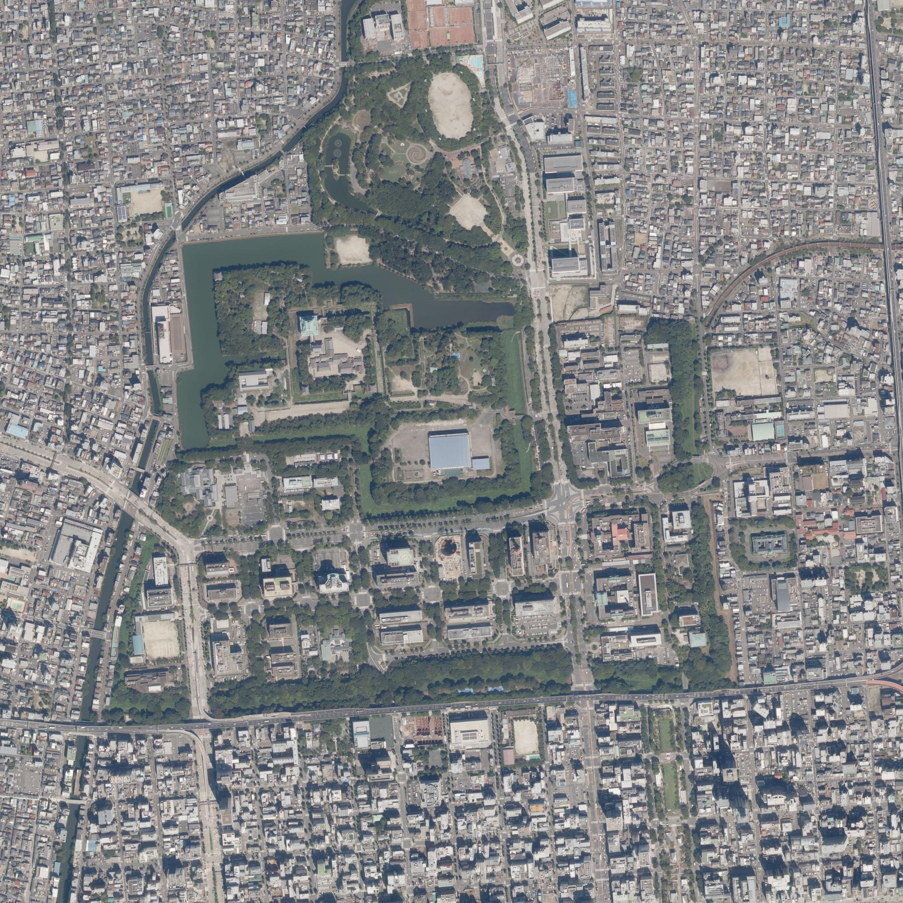
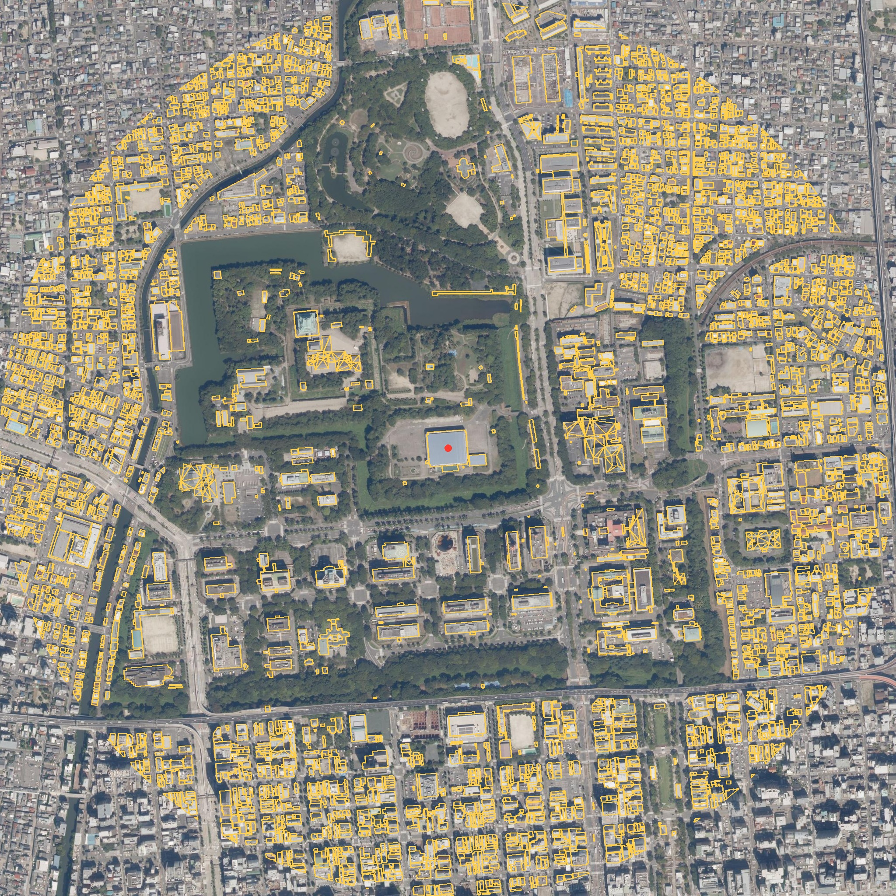

國土地理院 · 標高
DEM5A（基盤地図情報，原始網格 5 m）；缺值以 DEM10B（10 m）補齊。使用 z15／z14 的 EPSG:3857 XYZ 高程磚，解碼公分值後雙線性取樣，建模網格為 10 m。高程為標高，不把它當橢球高。
資料目錄 ↗TERRAIN STUDY 135 / AICHI, JAPAN
從護城河到城市的邊緣。
把一片真實地景，收進可繼續創作的底座。
國土地理院 × PLATEAU · 真實公尺尺度



PLATEAU 輪廓＋空照GSI 空照所有資料先轉入 JGD2011 平面直角座標系第 VII 系，再扣除體育館的東向、北向座標。空照的每個像素也反向取樣到同一網格，不以經緯度直接當公尺。
地面原點標高為 13.56 m。地形與建物一起扣除這個值，Blender 的 X 向東、Y 向北、Z 向上；每一單位就是一公尺。
DEM5A（基盤地図情報，原始網格 5 m）；缺值以 DEM10B（10 m）補齊。使用 z15／z14 的 EPSG:3857 XYZ 高程磚，解碼公分值後雙線性取樣，建模網格為 10 m。高程為標高，不把它當橢球高。
資料目錄 ↗全国最新写真（シームレス），EPSG:3857，z17 在中心約 0.98 m／像素。重投影成 2048² 貼圖（約 0.977 m／像素），UV 與地形共用同一個公尺方格。拼接照片不代表同一拍攝日期。
影像來源 ↗CityGML v4 的 LOD1 建物實體與道路面。來源 EPSG:6697，軸序為緯度、經度、標高；水平轉入 EPSG:6675。LOD1 保留輪廓與高度的概括量體，不是精細屋頂或立面模型。
原始資料集 ↗國土地理院資料依國土地理院內容利用規約使用；PLATEAU 依網站政策（與 CC BY 4.0 相容）使用。本作品為加工成果。逐檔 URL 與 SHA-256 保留於來源清單。
地形、建物、道路與貼圖資源分開存放。下載 .blend，直接在公尺尺度的場景裡擺放新模型；空照已打包進檔案。GLB 適合帶入其他 3D 工具或網頁。
需要 Python 3.11+、Blender 4.5+ 與 curl。解壓縮腳本後執行；重新抓取官方資料、生成分層模型，再自動標註渲染圖。地名不明確時，腳本會要求指定經緯度。
python -m venv .venv source .venv/bin/activate pip install -r requirements.txt python run.py --place '愛知県体育館' --radius 1000
更換地名時會嘗試查詢中心、對應城市的 PLATEAU 資料集與日本平面投影；若地名不唯一或資料不支援，會停止並提示需指定的參數。完整限制列於壓縮檔 README。生成在獨立 Blender 背景程序中進行。
{kind=link}